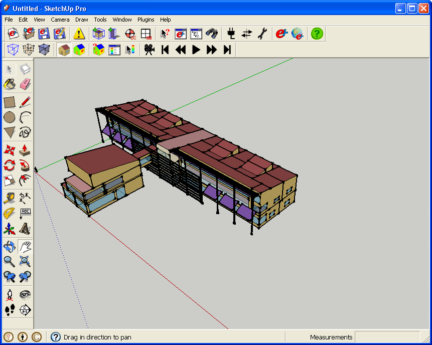
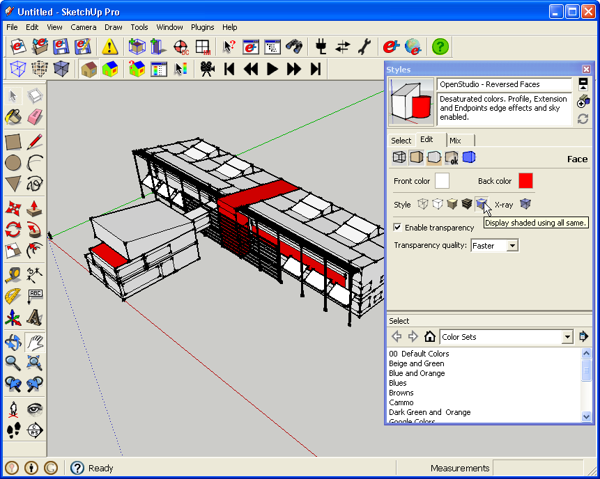

Using Styles to Show Reversed Faces
- Every face in SketchUp has a front and a back. Architectural models may not care which way these faces point, but for energy modeling the faces must be oriented correctly. A face's normal is a line perpendicular to the face going out through the front of the face.
- In OpenStudio the exterior of a surface is the front of the face and the interior of the surface is the back of the face.
- OpenStudio uses a unique front and back face color for surfaces, but on a complex model it may not be obvious when something is reversed. You can turn the transparency off, but you can also set up a style that is much easier to read.
- A model using typical OpenStudio coloring is shown below.

(Credit: David Goldwasser/NREL)
- Next is the same model with a custom style to show face normals. For this style, under 'face settings' the rendering option is set to 'display shaded using all same'. By setting the front color to white and the back color to bright red reversed faces easily found. You can quickly switch to this view by choosing 'Plugins->OpenStudio->Rendering Options->By Surface Normal' from the OpenStudio menu. You can also set a keyboard shortcut for this.

(Credit: David Goldwasser/NREL)
|